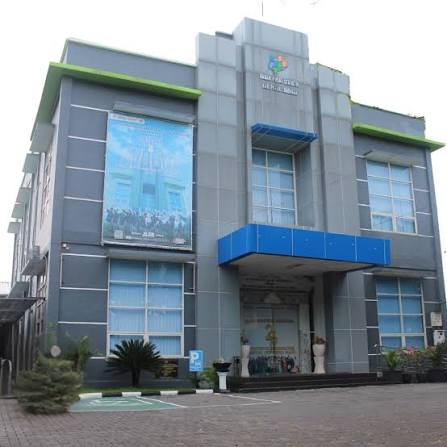

Diseminasi Data Statistik Megilan Terbuka, Cepat & Akurat
Platform modern observasi indikator makro, layanan rekomendasi survei sektoral, dan meta-data statistik Kabupaten Lamongan yang terintegrasi standar Satu Data Indonesia.
Lumbung Pangan Utama Jatim
> 1.1 Juta Ton Padi
Indeks Pembangunan Manusia
75.29 (Kategori Tinggi)
Cakupan Wilayah Lamongan
27 Kecamatan • 474 Desa
Portal Utama Pelayanan Publik BPS Kabupaten Lamongan
Klik salah satu kanal layanan interaktif di bawah untuk informasi, konsultasi, dan pengaduan langsung.
Yuk Bantu Kami dalam Survei Kebutuhan Data (SKD) 2026
Evaluasi Kinerja Layanan
Pernah mendapatkan layanan statistik BPS Kabupaten Lamongan selama tahun 2026? Ikut serta dalam perbaikan kinerja layanan kami melalui pengisian kuesioner SKD.
Mendukung Pembangunan
Masukan dan saran Anda sangat berharga untuk meningkatkan mutu ketersediaan data statistik dasar dan sektoral Kabupaten Lamongan.
QR Code Kuesioner SKD
Scan QR Code atau buka tautan s.id/skd3524
Akses Layanan Statistik BPS 3524
Enam kanal terintegrasi untuk publikasi data, rekomendasi kegiatan statistik sektoral, dan konsultasi interaktif bagi akademisi, instansi daerah, dan masyarakat.
Pelayanan Statistik Terpadu
Permintaan data mikro, peta digital, publikasi berkala, dan konsultasi statistik tatap muka ataupun virtual melalui satu pintu.
Rekomendasi Statistik (PSS)
Pendampingan OPD Pemerintah Kabupaten Lamongan dalam penerbitan surat rekomendasi survei kompilasi administrasi sektoral.
HALO PST Lamongan
Layanan asisten virtual dan customer officer responsif untuk permintaan tabel instan, konfirmasi jadwal, dan aduan pelayanan publik.
Lamongan Dalam Angka
Unduh gratis seluruh edisi tahunan publikasi statistik daerah, profil kemiskinan, PDRB, indikator pertanian, serta sensus penduduk.
Zona Integritas & Pengaduan
Komitmen Wilayah Bebas dari Korupsi (WBK) dengan integrasi Whistleblowing System (WBS) dan SP4N LAPOR BPS 3524.
Konektor Satu Data API
Antarmuka pemrograman RESTful API terstandar SDMX untuk agregasi indikator makro desa dan kecamatan secara otomatis.
Kabupaten Lamongan dalam Angka
Jumlah Penduduk Terdata
Pertumbuhan Ekonomi Positif
Metadata Standar SDI
Kapabilitas Observasi Real-Time
Arsitektur pipeline data SOTO menjamin rilis Berita Resmi Statistik (BRS) tepat waktu dengan visualisasi indikator makro yang komprehensif.
Rilis Berita Resmi Statistik (BRS)
Arsip otomatis diseminasi bulanan & tahunan
Inflasi, PDRB & Ketenagakerjaan
Dihasilkan melalui metodologi baku BPS RI
Perkembangan Sektor Unggulan
Indeks PDRBDistribusi Produk Domestik Regional Bruto menurut lapangan usaha utama
Sinkronisasi Data Desa Menuju Lamongan Megilan
Inisiatif Desa Cantik (Desa Cinta Statistik) di Kabupaten Lamongan menghubungkan 474 aparat desa dengan pembina statistik BPS 3524. Melalui portal SOTO, data registrasi penduduk dan bantuan sosial tersinkronisasi tanpa duplikasi.
Literasi statistik terstandardisasi bagi aparatur desa.
Format kode referensi wilayah baku kemendagri & BPS.
Desa Terkoneksi
474 / 474
Kanal Kolaborasi Statistik
Riset & Edukasi
Akses cuma-cuma untuk mahasiswa, dosen, peneliti, dan masyarakat umum untuk penyusunan karya ilmiah dan tesis.
Portal Terpadu SOTO
Pusat observasi terpusat untuk monitoring indikator SDGs daerah, inflasi bulanan, kemiskinan, dan komoditas pangan Lamongan.
Pembinaan Sektoral
Pendampingan teknis metodologi survei bagi seluruh Organisasi Perangkat Daerah Kabupaten Lamongan.
Satuan Kerja BPS 3524 Lamongan
Berkomitmen menyediakan data statistik berkualitas untuk Lamongan yang Megilan, Berkeadilan, dan Berintegritas Tinggi.

Jaringan Sensus & Survei Terintegrasi
Pengumpulan data lapangan berbasis CAPI/PAPI di seluruh pelosok 27 kecamatan Lamongan.

Statistisi & Mitra Profesional
Tim fungsional berintegritas tinggi mengawal akurasi data statistik dasar dan sektoral.
Jl. Veteran No. 70, Lamongan
Ruang Pelayanan Statistik Terpadu (PST) BPS Kabupaten Lamongan untuk konsultasi statistik, data mikro, dan perpustakaan.